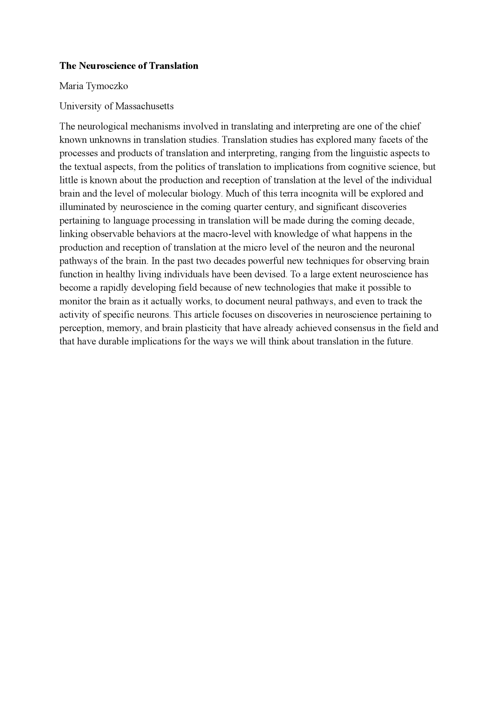
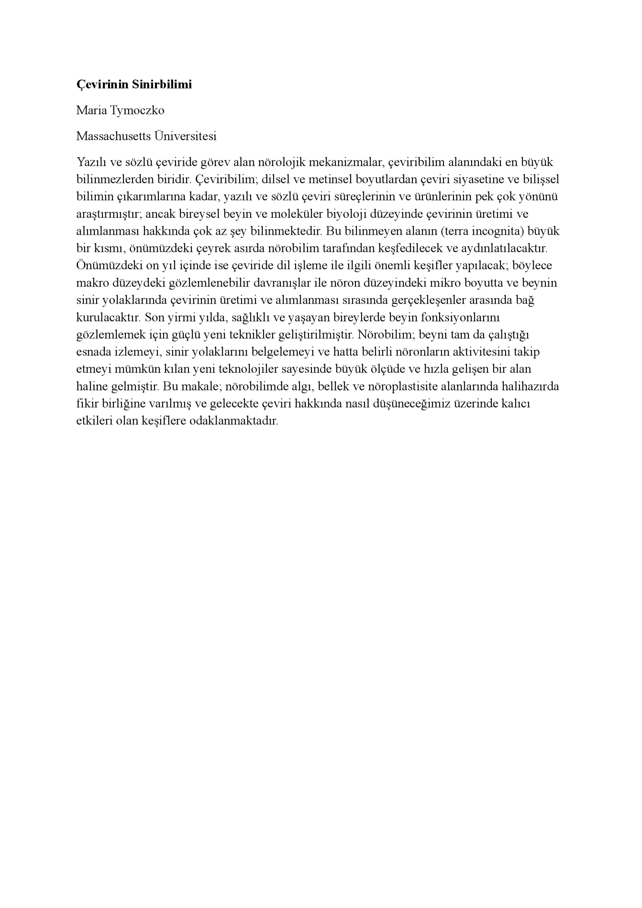

Akademik Çeviri
Dil çifti:
İngilizce - Türkçe
Açıklama:
Bu çalışmada, Maria Tymoczko'nun "The Neuroscience of Translation" adlı makalesinin giriş bölümü İngilizceden Türkçeye çevrilmiştir.
Çeviri, akademik terminolojiyi, tutarlılığı ve kaynak metnin üslubunu koruyarak gerçekleştirilmiştir.

